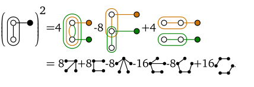

SDPs for Extremal Combinatorics
$$\definecolor{darkorange}{rgb}{0.8, 0.45, 0}$$
Daniel Brosch
University of Klagenfurt
February 22, 2023
University of Klagenfurt
February 22, 2023
Continuous Combinatorics
The study of limit objects of growing combinatorial structures.
This talk: graph limits $${\color{darkorange}\mathcal{G}} = (G_i)_{i=1}^\infty,$$ where $G_i$ is a graph on $i$ vertices.
How many edges can there be in a triangle free graph?
Graphons (Graph-functions)
[Lovász, Szegedy, 2006, $\approx 880$ citations]


Flag Algebras
[Razborov, 2007, $\approx 350$ citations]
Graphons and Flag Algebras
Flag algebras' limit functionals $$\phi_{\mathcal{G}}\colon \{\text{finite graphs}\}\to[0,1]$$ correspond to graphons "up to isomorphism".
They form a compact metric space.
Subgraph densities
The density of a graph $\color{green}H$ in $\color{darkorange}\mathcal{G}= (G_i)_{i=1}^\infty$ is $$\phi_{\mathcal{G}}({\color{green}H}) := \lim_{i\to\infty} \mathbb{P}[{\color{red}\sigma_i}({\color{green}H}) \text{ is a subgraph of }{\color{darkorange}G_i}],$$ where ${\color{red}\sigma_i}$ is a random permutation in $S_i$.
Triangle free graphs
Maximize the edge density in a triangle free sequence $\mathcal{G}$ of graphs of increasing size:
We saw that
but how can we prove an upper bound?
Multiplying subgraph densities
To multiply two subgraph densities, we glue together the graphs:
These relationships are independent of $\mathcal{G}$, motivating the definition

where a graph $H$ now stands for the function $$\small H(\mathcal{G}) = \phi_{\mathcal{G}}(H)= \lim_{i\to\infty} \mathbb{P}[{\sigma_i}({H}) \text{ is a subgraph of }{G_i}].$$
We can fix entries of the $\sigma_i$ to fix (flag) some vertices, and extend the gluing operation to partially labeled graphs (Flags):
Flag Sums-of-Squares
- Flags $F$ send graph sequences to real numbers: $$ F (\mathcal{G}) \in [0,1]$$
-
Then so do real linear combinations of flags
The literature calls these "Quantum graphs". -
Squares of real numbers are nonnegative:
We can average Flags over all choices of labels, unlabeling them:
We can now find an upper bound for the edge density in triangle free graphs:
As with polynomial optimization, we can model Flag-SOS using semidefinite programming.
Polynomial Sums-of-Squares
- Let ${\color{darkorange}[x]} = (m_1,\ldots, m_k)^\top$ be a vector containing a finite subset of a basis of $\mathbb{R}{\color{darkorange}[x]}$.
Polynomial Sums-of-Squares
- Let ${\color{darkorange}[x]} = (m_1,\ldots, m_k)^\top$ be a vector containing a finite subset of a basis of $\mathbb{R}{\color{darkorange}[x]}$.
- We can write polynomials in the form $$\small p = \sum_{i=1}^k c_i m_i = c^\top{\color{darkorange}[x]}$$
Polynomial Sums-of-Squares
- Let ${\color{darkorange}[x]} = (m_1,\ldots, m_k)^\top$ be a vector containing a finite subset of a basis of $\mathbb{R}{\color{darkorange}[x]}$.
- We can write polynomials in the form $$\small p = \sum_{i=1}^k c_i m_i = c^\top{\color{darkorange}[x]}$$
- And squares as $$\small p^2 = (c^\top{\color{darkorange}[x]})^2 = {\color{darkorange}[x]}^\top (cc^\top) {\color{darkorange}[x]} = \langle c c^\top, {\color{darkorange}[x]}{\color{darkorange}[x]}^\top\rangle$$
Polynomial Sums-of-Squares
- And squares as $$\small p^2 = (c^\top{\color{darkorange}[x]})^2 = {\color{darkorange}[x]}^\top (cc^\top) {\color{darkorange}[x]} = \langle c c^\top, {\color{darkorange}[x]}{\color{darkorange}[x]}^\top\rangle$$
- Sums-of-squares correspond to PSD matrices: $$\small \sum p_i^2 = \left\langle \sum c_ic_i^\top, {\color{darkorange}[x]}{\color{darkorange}[x]}^\top\right\rangle =\left\langle M, {\color{darkorange}[x]}{\color{darkorange}[x]}^\top\right\rangle,$$ for some $M \in \mathbb{S}^n_+$.
Flag Sums-of-Squares
- Let ${\color{darkorange}\mathcal{F}}$ be a (finite) vector of flags.
Flag Sums-of-Squares
- Let ${\color{darkorange}\mathcal{F}}$ be a (finite) vector of flags.
- Linear combinations of flags are of the form $$f = c^\top {\color{darkorange}\mathcal{F}}.$$
Flag Sums-of-Squares
- Let ${\color{darkorange}\mathcal{F}}$ be a (finite) vector of flags.
- Linear combinations of flags are of the form $$f = c^\top {\color{darkorange}\mathcal{F}}.$$
-
Unlabelled squares can be written as
Flag Sums-of-Squares
- Linear combinations of flags are of the form $$f = c^\top {\color{darkorange}\mathcal{F}}.$$
-
Unlabelled squares can be written as
-
Flag sums-of-squares are of the form
for positive semidefinite matrices $M$.
Flag Sums-of-Squares
-
Flag sums-of-squares are of the form
for positive semidefinite matrices $M$.
In practice: Use "smarter" hierarchies, block diagonalized by combinatorial ideas and/or symmetries.
The space of graph limits
We saw that triangle free graphs have at most edge density $\frac{1}{2}$.
What happens if we allow some triangles?

Investigating nonnegativity
Let $p=a_1 G_1 + a_2 G_2 + \ldots + a_k G_k$ be a linear combination of unlabeled graphs."Does $p \geq 0$ hold?"
is undecidable.
Applications of flag algebras: Directed graphs
Caccetta-Haggkvist conjecture: Every simple directed graph on $n$ vertices with minimum outdegree $\frac{n}{3}$ contains a directed triangle.[Hladký, Král’, Norin 2009]: True for minimum outdegree $0.3465n$.
Point order types
Hill's conjecture: The crossing number of $K_n$ is $$\mathrm{cr}(K_n) =\frac{1}{4}\left\lfloor \frac{n}{2} \right\rfloor \left\lfloor \frac{n-1}{2} \right\rfloor \left\lfloor \frac{n-2}{2} \right\rfloor \left\lfloor \frac{n-3}{2} \right\rfloor$$[Balogh, Lidicky, Salazar 2019]: The conjecture is at least $98.5\%$ true.
And much more!
- Hypergraphs [Razborov, 2010]
- Subgraphs of hypercube graphs [Balogh, Hu, Lidicky, Liu / Baber 2012]
- Order types [Goaoc, Hubard, de Verclos, Séréni, Volec, 2014]
- Permutations [Balogh, Hu, Lidicky, Pikhurko, Udvari, Volect, 2015]
- Tournaments [Coregliano, Razborov 2015]
- Phylogenetic trees [Alon, Naves, Sudakov 2015]
Applications to Turán and Ramsey type problems, inducibility, fractalizers,...
The symmetries of flag algebras
In my thesis (danielbrosch.com/thesis) I investigate the symmetries of flag algebras, further block-diagonalizing the SDP hierarchies.
Work in progress:
- Generalization of Razborov's derivatives of flags: "Local" graph modifications cannot improve optimal solutions.
- Application of Razborov's hierarchies to constant weight error correcting codes (with Sven Polak).
- The flag algebra of binary rooted trees (with Diane Puges).